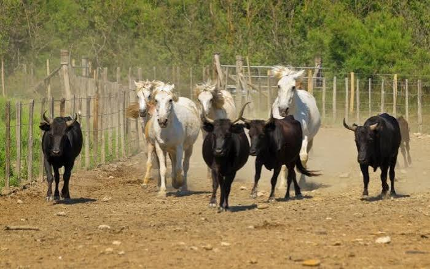

Taureaux &
Chevaux
Camargue gardoiseRaço di Biòu & cheval Camargue


⟹ Sites Emblématiques ⟸
Deux animaux façonnés par le delta. Le taureau Camargue et le cheval Camargue sont indissociables des paysages du delta du Rhône. Leurs origines exactes se perdent dans une longue histoire d’élevage, de déplacements d’animaux et de sélection locale : il serait excessif de leur attribuer une filiation unique et certaine depuis l’Antiquité. Ce qui est bien visible, en revanche, c’est leur adaptation aux pâturages extensifs, aux terrains humides et aux variations saisonnières d’un territoire longtemps difficile à exploiter.
La Petite Camargue, terre de pâturage. À l’ouest du Petit Rhône, les prés du Cailar, les environs de Vauvert et les marais proches de Saint-Laurent-d’Aigouze accueillent depuis longtemps des troupeaux. Les sansouïres, les prairies et les zones inondables imposent des déplacements saisonniers et une surveillance attentive. Le pâturage contribue à maintenir certains milieux ouverts, même si ses effets dépendent de la charge animale et des conditions écologiques. L’élevage camarguais s’est ainsi construit dans une relation permanente entre animaux, eau, végétation et travail humain.
La manade, bien davantage qu’un troupeau. Une manade est un élevage de taureaux ou de chevaux conduit selon des pratiques extensives. Le manadier organise la reproduction, le suivi sanitaire et les déplacements ; les gardians interviennent à cheval pour rassembler et trier les bêtes. Leur trident, outil traditionnel de conduite, est devenu l’un des symboles de ce métier. Derrière les images de galop dans les marais, la vie quotidienne demande une connaissance précise des animaux, du terrain et des risques liés aux crues ou à la chaleur.

Le cheval blanc qui naît souvent sombre. Le cheval Camargue est célèbre pour sa robe claire, mais les poulains naissent généralement avec une robe foncée qui s’éclaircit en grandissant. Compact, endurant et sûr de pied, il est particulièrement adapté au travail des gardians. La reconnaissance officielle de la race et la tenue de son livre généalogique ont contribué à préserver ses caractéristiques. Son image de cheval « sauvage » doit être nuancée : les chevaux de manade sont des animaux d’élevage, même lorsqu’ils vivent une grande partie de l’année en plein air.
Le taureau Camargue et la culture de la bouvine. Plus petit et plus vif que certains bovins élevés pour la viande, le taureau Camargue occupe une place particulière dans les traditions locales. Dans la course camarguaise, il n’est pas mis à mort : les raseteurs tentent de retirer des attributs fixés à ses cornes. Les meilleurs cocardiers acquièrent une réputation durable et peuvent être célébrés bien au-delà de leur manade. Cette culture de la bouvine relie élevage, arènes, fêtes villageoises et mémoire collective.
Le Cailar et la mémoire des grands cocardiers. Au Cailar, la mémoire du taureau Sanglier, mort en 1933, témoigne de l’attachement des habitants à certains animaux. Les noms des cocardiers se transmettent d’une génération à l’autre, comme ceux de sportifs ou d’artistes populaires. Ce phénomène distingue la course camarguaise d’autres spectacles taurins : la carrière et le caractère du taureau y occupent une place centrale. Les arènes et les places des villages gardois sont ainsi des lieux de transmission autant que de divertissement.
Baroncelli, Mistral et l’affirmation d’une identité. À la fin du XIXe siècle et au début du XXe, le mouvement de renaissance provençale a contribué à mettre en valeur la langue, les costumes et les usages régionaux. Le marquis Folco de Baroncelli, poète et manadier, fonde la Nacioun Gardiano en 1904 pour défendre et transmettre les traditions camarguaises. Son action a durablement marqué l’image du gardian et les cérémonies locales. Cette tradition est à la fois héritée du travail pastoral et continuellement réinterprétée par les fêtes et les associations.
Abrivado, bandido : des gestes devenus fêtes. Historiquement, conduire les taureaux entre pâturages et arènes nécessitait l’intervention de cavaliers expérimentés. L’abrivado évoque l’arrivée des taureaux, la bandido leur retour. Aujourd’hui, ces manifestations sont aussi des rendez-vous festifs qui mobilisent manades, gardians et villages. Elles font partie du patrimoine vivant de la Petite Camargue, tout en demandant des règles de sécurité et une attention croissante au bien-être des animaux.
Un patrimoine vivant confronté aux changements. La reconnaissance du cheval Camargue et l’appellation d’origine de la viande de taureau ont donné des cadres à des pratiques anciennes. Mais les manades font face au coût du foncier, aux épisodes de sécheresse, à la salinisation et aux évolutions des attentes sociales. Préserver ce patrimoine ne consiste donc pas à figer une carte postale : il s’agit de maintenir des savoir-faire, des milieux naturels et des activités économiquement viables dans un delta en transformation.
Des races construites dans la durée. Les caractéristiques actuelles du cheval et du taureau Camargue résultent d’une histoire longue, où se mêlent adaptation aux zones humides et choix des éleveurs. La rusticité ne signifie pas absence de soins : les animaux doivent supporter les variations de température, les insectes, les sols irréguliers et les périodes de faible ressource fourragère. Les manadiers sélectionnent aussi des aptitudes liées au travail ou aux traditions taurines. Cette double influence du milieu et de l’élevage explique pourquoi les origines légendaires doivent être distinguées des connaissances zootechniques.
Le calendrier d’une manade. La vie d’une manade suit les saisons. La pousse de l’herbe, la disponibilité de l’eau, les naissances, les opérations de tri et les manifestations locales déterminent le rythme de travail. Rassembler les animaux dans de vastes pâturages demande de l’expérience : le gardian doit anticiper leurs réactions, connaître les passages praticables et éviter les situations dangereuses. Cette dimension quotidienne, souvent invisible pour le public, constitue une part essentielle du patrimoine professionnel camarguais.
Le cocardier, une carrière singulière. Dans la course camarguaise, certains taureaux se distinguent par leur comportement dans l’arène et deviennent des cocardiers connus. Le public suit leur carrière au fil des saisons, et leur nom peut rester associé à un village ou à une manade bien après leur retraite. Cette mémoire populaire se retrouve dans les récits familiaux, les photographies anciennes et parfois les monuments. Elle rappelle que les traditions taurines locales reposent autant sur la connaissance individuelle des animaux que sur la fête elle-même.
Paysage, économie et transmission. Une manade entretient des relations avec de nombreux acteurs : propriétaires de pâturages, vétérinaires, organisateurs de courses, associations et collectivités. Son activité peut contribuer au maintien de prairies ouvertes et de savoir-faire équestres, tout en devant composer avec les enjeux écologiques des zones humides. La transmission ne concerne donc pas seulement les costumes et les cérémonies : elle passe par l’apprentissage de la conduite des troupeaux, de la lecture du terrain et des responsabilités envers les animaux.